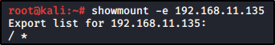

Show the NFS server's export list.

Auxiliary:
NFS Mount Scanner (Metasploit)
How to mount a filesystem:
The syntax of the shared folder is:
IP:/SHARE_PATH (E.G. 192.168.11.135:/backup_folder)
DOMAIN:/SHARE_PATH (E.G example.com:/backup_folder)